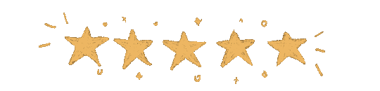

Beiyu Lin
Email: beiyulin@gmail.com
Connect: LinkedIn (scan) · link
Dr. Lin earned a B.S. from Shanghai Maritime University (2011), an M.S. from Stony Brook (2013), and an M.S. and Ph.D. from Washington State University (2015, 2020). Her work spans machine learning, deep learning, human dynamics, behavior modeling, home/building security, biomedical AI, and smart environments.

News
2025
| 10/22 | Invited guest speaker for Grace Series Talk (talk picture). |
| 10/16 | Guest editor for “Technologies for Smart Cities” (Urban Science). |
| 10/14 | Consultant for CyberEye (AI & cybersecurity strategy). |
| 07/27 | Co-organizing Special Session on LLM Ecosystem for Healthcare at IEEE BHI 2025 (Atlanta, October). |
| 04/02 | Preprint: OnRL-RAG: Real-Time Personalized Mental Health Dialogue System. |
| 03/31 | Preprint: LLMs for Explainable AI: A Comprehensive Survey. |
| 03/03 | Preprint: LLMs for Code Generation: A Survey. |
{kind=link}
2024
| 12/06 | Workshop “Foundational AI for Pervasive Computing” accepted by PAKDD 2025. |
| 11/16 | Congrats to Mehdi for poster accepted by IEEE Big Data 2024. |
| 10/22 | Affiliate, Dept. of Psychiatry & Behavioral Sciences, OU HSC, College of Medicine. |
| 10/15 | Invited to NSF CISE MSI Aspiring PI workshop at UNT (travel support). |
| 10/08 | Congrats to Ahsan for Best Student Presentation Runner-up at IEEE DSAA’24. |
| 09/16 | Congrats to Nam, Saeed, and Ahsan for student abstract accepted by IEEE DSAA’24 (support by NSF & Journal of AI). |
| 08/15 | Guest editor on Symmetry/Asymmetry in Behavioural Science, MDPI. |
| 08/08 | Invited to NSF Workshops on AI & Sustainability at Purdue (travel support). |
| 07/26 | Congrats to Nam for GCoE Graduate Student Travel Award. |
| 07/23 | Congrats to Ramu for full paper accepted by IEEE DSAA’24 (CORE A, 26% acceptance). |
| 06/24 | Congrats to Nam for abstract accepted by KDD PhD Consortium. |
| 05/30 | Congrats to Gary and ChihYu for Gallogly College of Engineering Undergraduate Summer Research Fellowship. |
| 05/01 | Congrats to Nam for Gallogly College of Engineering PhD Recruitment Excellence Fellowship. |
| 04/22 | SBIR Phase I funding selected.  |
| 04/15 | Guest lecture at Syracuse University. |
| 04/04 | NASA Letter of Interest selected. |
| 03/19 | Publication in MDPI Buildings (Q1). |
| 02/14 | OU Libraries Open Access Fund award. |
{kind=link}
{kind=link}